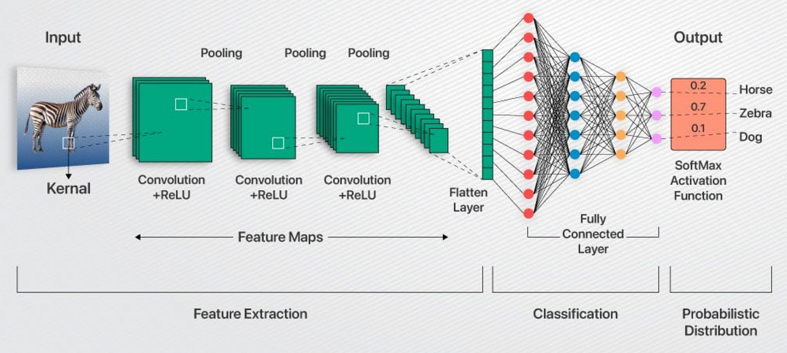
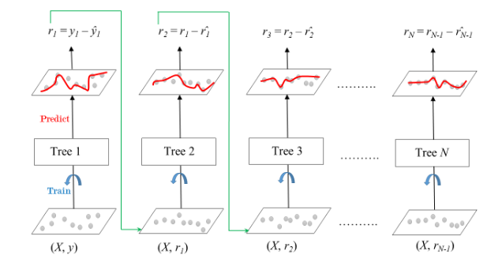

PyTorch • FastAPI • Docker • GCP
Fine-tuning an ESRGAN super-resolution model wrapped as a production REST API. The containerized application is designed to be deployed serverlessly on Google Cloud Run for high scalability.
Python • BigQuery • Scikit-learn • Streamlit
Developed an internal tool at Google Cloud ingesting GCP billing exports. Applied ML anomaly detection and time-series forecasting to predict monthly cloud costs. Deployed via Cloud Run.

TensorFlow • Keras • CNN
Built a custom convolutional neural network to classify images from the CIFAR-10 dataset. Achieved 91.3% test accuracy via advanced hyperparameter tuning and data augmentation techniques, outperforming a baseline ResNet.
🔗 View on GitHub
Scikit-learn • PCA • Matplotlib
Built an end-to-end ML pipeline using Random Forest and Gradient Boosting algorithms combined with PCA for dimensionality reduction. Accurately predicted heating loads, achieving an R² of 0.94 on held-out test data.
🔗 View on GitHub